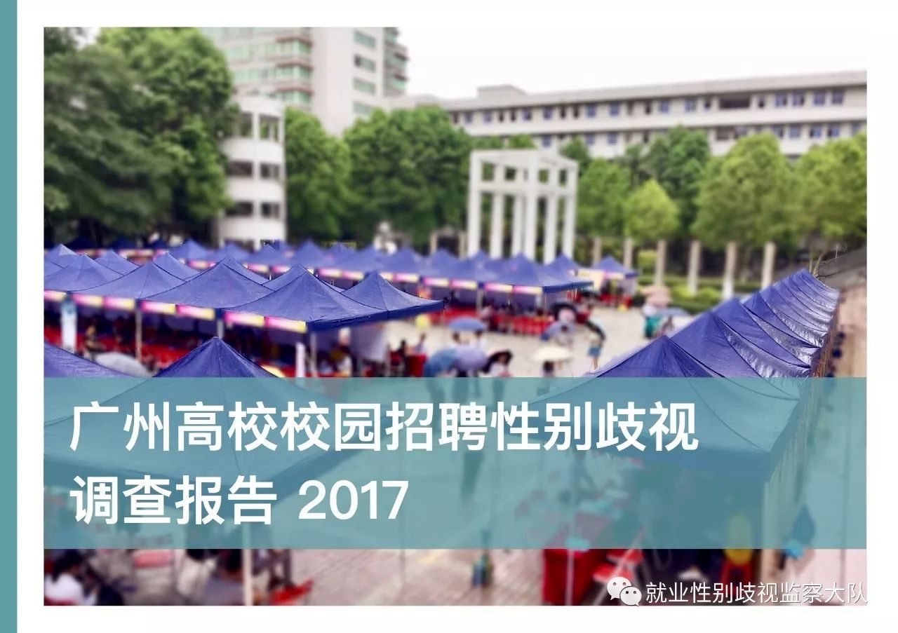
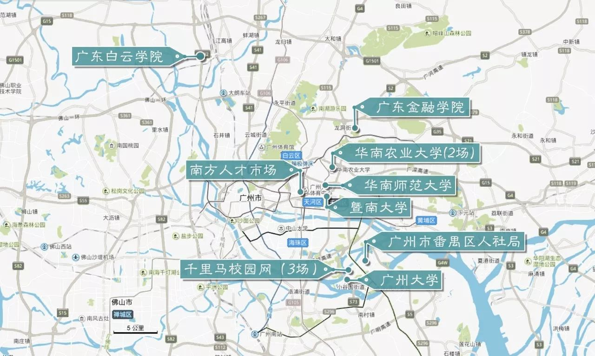
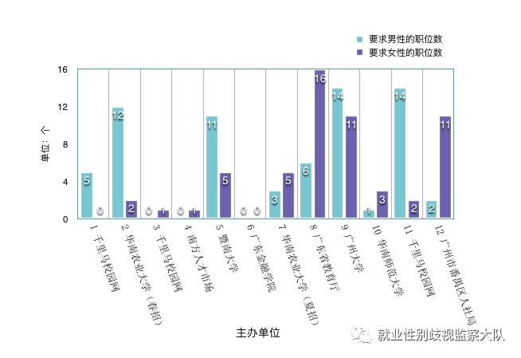
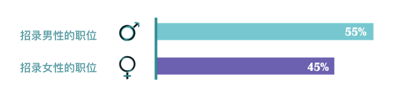
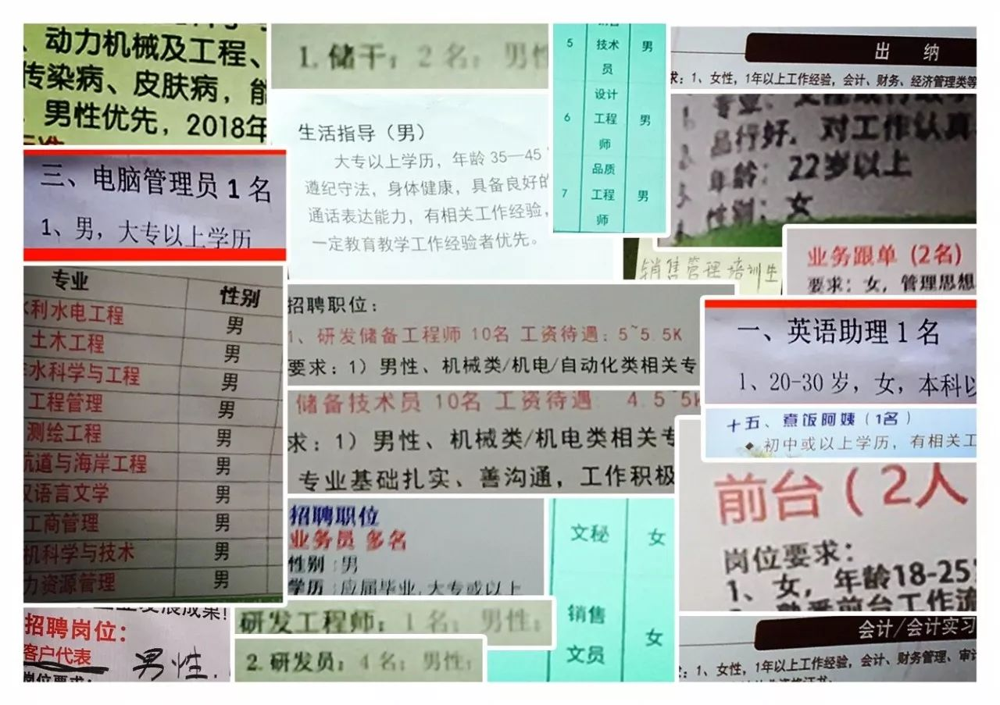
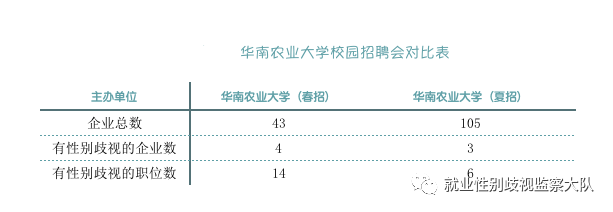

广州高校校招报告：9成招聘会存在性别歧视
2017年12月23日，《广州高校校园招聘性别歧视调查报告2017》在广州正式发布。
据教育部数据显示，2017年全国高校毕业生人数达到795万人，其中约一半为女性。高校毕业生的就业受到多方关注，然而女大学生在就业过程中，却遭遇着艰难的困境。校园招聘是企业招工和毕业生就业的重要渠道，因此校园招聘中性别歧视的防治工作就显得至关重要。
该报告的作者余追是一名妇女工作者，她长期关注女性就业问题。在2017年2月至6月间，余追和另外4位同伴调查广州地区举办的12场招聘会，记录下了招聘会中所有出现性别限制的招聘广告的相关信息。
报告调查员通过现场沟通、发微博、打电话、写邮件、寄举报信等不同的方法，向教育部门、人社部门和高校等责任相关方进行沟通和举报。
报告显示：超9成招聘会存在性别歧视，高校等责任方缺乏监管；限定录用男性的职位远多于限定录用女性的职位，男性的薪酬和发展前景也普遍优于女性。

在校园招聘会中，性别就业歧视的状况究竟如何？主办单位、用人单位、监察部门等相关方的态度和做法是怎样的？如何消除性别就业歧视？一起往下看：
▲▽ 壹 现场调研的基本情况 ▽▲
12场招聘会中，有6场的主办方是广州地区的高校，分别为华南农业大学、暨南大学、广东金融学院、广州大学、华南师范大学。其余6场招聘会，主办单位分别为广东省教育厅、广州市番禺区人力资源和社会保障局、南方人才市场，以及广东千里马人力资源有限公司旗下的千里马校园网。

本次选择的招聘会面对的群体均为高校学生，举办地点大多是广州地区的高校及广州大学城。
12场招聘会中，仅有一场招聘会没有出现性别限制的招聘广告，超过9成的招聘会出现了不同程度的性别歧视现象。
有性别限制的职位数最多的两场招聘会的主办单位，分别为广州大学和广东省教育厅。教育厅主办的招聘会，依然出现性别歧视的招聘广告。由此可见，教育部门关于就业平等的意识有待提升，监管有待加强。

除南方人才市场外，其余11场招聘会共计1579家用人单位参与，其中有56家用人单位的招聘存在性别歧视，占3.55%。在这11场招聘会中，招录男性的职位有占比为55%；招录女性的职位占比为45%，限定录用男性的职位比限定录用女性的职位多10%。

倾向于录用男性的职位可以归纳研发员、业务员、技术员、销售、储干、工程师、设计员等几类。其中，工程师、技术员等理工科职位对男性的偏向最大，占比分别为26%、19%，薪酬在4000元至1万元之间。

仅限女性的职位可以归纳文员、助理、财务、客服、销售、护理、专员等几类。招录女性的职位类型中，约4成为文员、助理等文职工作，薪酬约在2000元至5000元间；约3成为销售、客服等销售服务类职位，薪酬在2500元至7000元间。

可以看出，仅限男性的职位多为技术类，工作前景好，相应的社会地位高。而仅限女性的职位则多为文职类和服务类，薪酬低，升职空间小。倾向于不同性别职位最明显的区别是，仅限男性的职位的薪酬普遍高于女性。
▲▽ 贰 和相关方沟通的情况和分析 ▽▲
01 沟通情况
针对存在性别歧视的招聘广告，调查员采取了不同的方法，向教育部门、人社部门和高校等责任相关方进行投诉举报。12场招聘会中，仅有4场有有效回复；其余投诉举报，有的没有回复，有的被拒绝处理。在所有沟通方式中，致电高校的回复率最高，和用人单位沟通的效果则最差。回复情况说明高校等责任方对性别就业歧视的重视不足。

02 责任方监管不足
不同的主办单位、监管部门设置了电话、信件、网络投诉等不同的投诉方式。基于调查其有效性的考虑，调查员选择了不同的方式进行举报投诉。但统一反应出来的情况却是缺乏管理、回应滞后。
在招聘会举办前，主办单位有义务审核用人单位的资质及招聘信息。此次被调查的招聘会中，有9成均有性别歧视的现象，有三分之二的主办单位对投诉举报无处理。这不仅表明主办单位在招聘会前的审核不严谨，还显示其对现场监查不力、缺乏后期管理。
03 改变
相比于春季招聘会，华南农业大学夏季招聘会加强了招聘会前期的信息审核，这有效地改善了性别歧视的环境。但仍有性别歧视招聘广告的出现，说明华南农业大学做的还不够。
每场招聘会，都有工作人员在现场协调。招聘会的主办单位应当开展提升工作人员的性别意识培训，加强对招聘会现场的监督。

▲▽ 叁 总结和建议 ▽▲
根据以上研究，《报告》有以下5点发现：
（1）调查人员对招聘会中的性别歧视现象，尝试了多种投诉、举报方式，但回复差强人意。高校等责任相关方缺乏明确的投诉机制，投诉者需要尝试多种方式，并且多次跟进，才会得到回复，投诉成本很高。
（2）在实践过程中，各级教育部门、人社部门和高校缺乏监管、执行的细则。由于责任方对性别就业歧视的监管不力，造成校园招聘会中性别歧视泛滥，难以根除。
（3）教育部门、人社部门、用人单位等责任方的性别就业平等意识不足，对性别歧视现象缺乏重视。
（4）公众积极参与可以督促责任方加强对性别就业歧视的重视和监管，进而消除性别就业歧视。
（5）面对高校毕业生的招聘会，超9成存在性别歧视，限定录用男性的职位远多于限定录用女性的职位，男性的薪酬和发展前景也普遍优于女性。用人单位的聘用往往以男性的偏好为衡量标准，这和传统性别刻板印象有很大的关系。

因此，《报告》建议：
（1）高校等责任方设置有效的投诉机制
学校、人才市场等责任相关方应当设置明确的投诉流程、投诉渠道，对投诉和举报及时、有效处理。学校、人才市场等可建立黑名单制度，将不予改正的用人单位加入黑名单，拒绝其进入校园。
关于校园招聘中的性别歧视问题，劳动监察部门、教育部门和各政府部门应该与广大的学生、公益界、律师界等展开对话，鼓励公众参与和监督，听取公众意见，采纳建议。
（2）高校等责任方制定细则，加强监管
教育部门、人社部门、高校等对校园招聘会由监管、举办等职责的相关部门应当制定具体的细则，将校园招聘中的性别歧视监管落到实处。在招聘会举办前，主办单位应当加强对用人单位的招聘信息的审核。在招聘会举办过程中，应当加强对现场出现的性别歧视现象的管理。
（3）人社部门等责任方应开展意识提升活动，并完善对歧视的处理
教育部门、人社部门和高校等和校园招聘、毕业生就业密切相关的部门，应当开展提升性别就业平等意识的活动。例如在工作人员的培训和考核中，加入性别意识的内容。在实践过程中，高校等责任方要不断完善对性别就业歧视的处理。
（4）公众积极行动，消除性别就业歧视
公众参与监管可以督促责任方履行职责，减少就业中的性别歧视现象，对歧视行为零容忍，对身边的性别就业歧视进行举报。
（5）高校等责任方应该做好就业性别平等的教育和宣传，打破固化的性别观念
人社部门、教育部门应该做好就业性别平等的教育和宣传，严厉惩罚有性别歧视的用人单位。教育部门和高校应该加强有关性别平等的教育，鼓励每一个学生都能够追求自己喜欢的职业。
点击阅读原文下载调查报告全文